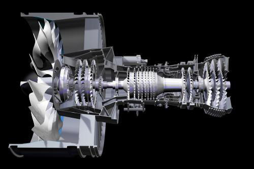

Jednym z g³ównych obszarów dzia³ania Machine Factory jest produkcja przek³adni i elementów przek³adni lotniczych.
W tym zakresie firma wyspecjalizowa³a siê w:
- wysokowydajnej piêcioosiowej obróbce mechanicznej HSM, HPM (toczenie, frezowanie stopów lekkich i stali),
- wierceniu d³ugich otworów,
- szlifowaniu , frezowaniu, d³utowaniu, przeci¹ganiu uzêbieñ i wielowypustów,
- kontroli wymiarowej (skanowanie profili ,
- szybkim prototypowaniu (3D Rapid Prototyping),
- honowaniu otworów,
- kulowaniu,
- natryskiwaniu plazmowym,,
- polerowaniu ostrych krawêdzi,
- kontroli NDT (FPI, ECI).
Jednym z obszarów dzia³alnoœci WSK Rzeszów jest unikalny proces wytwarzania krytycznych komponentów silników lotniczych z wykorzystaniem metod odlewniczych superstopów.
W tym obszarze firma wyspecjalizowa³a siê w:
- pró¿niowym odlewaniu czêœci mono i polikrystalicznych turbin lotniczych,
- kontroli NDT (FPI, UT, Flow, RTG, NRay),
- kontroli wymiarowej,
- szybkim prototypowaniu,
- wysokotemperaturowej obróbce cieplnej w pró¿ni,
- wspomaganiu procesów odlewniczych z wykorzystaniem systemów CAD/CAM/CAE,
- wspomaganiu procesów odlewniczych z wykorzystaniem systemów CAD/CAM/CAE,
- cyfrowym zarz¹dzaniu procesem odlewniczym.

Jednym z g³ównych obszarów dzia³ania firmy jest produkcja blaszanych elementów konstrukcyjnych silników lotniczych, obejmuj¹ca g³ównie: wytwornice gazu, wyloty gazu, komory spalania, kad³uby turbin, dyfuzory, dyski, uszczelnienia oraz ³opatki sprê¿arki. Specjalizacja w zakresie produkcji elementów blaszanych obejmuje:
- formowanie blach na zimno,
- formowanie blach z podgrzewaniem,
- zgrzewanie oporowe (punktowe, liniowe),
- spawanie (TIG, EB, plazma),
- natryskiwanie plazmowe,
- pow³oki dyfuzyjne,
- pró¿niowa obróbka cieplna,
- lutowanie pró¿niowe,
- obróbka laserowa,
- pow³oki galwaniczne,
- obróbka niekonwencjonalna (ECM, EDM),
- kontrola NDT (FPI, cyfrowa kontrola RTG),
- kontrola wymiarowa (skanowanie, pomiary laserowe).
Niekonwencjonalne metody obróbki:
- ciêcie laserowe,
- dra¿enie laserowe,
- dra¿enie elektroiskrowe EDM,
- dra¿enie elektrochemiczne ECM,
- kulowanie.
Procesy spajania:
- spawanie TIG,
- spawanie plazmowe,
- spawanie wi¹zk¹ elektronów EBW,
- spawanie laserowe,
- zgrzewanie oporowe,
- lutowanie piecowe,
- lutowanie indukcyjne,
- lutowanie palnikiem.